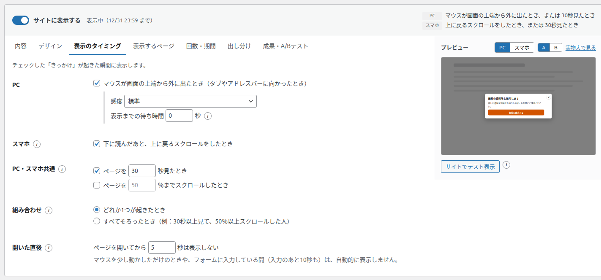
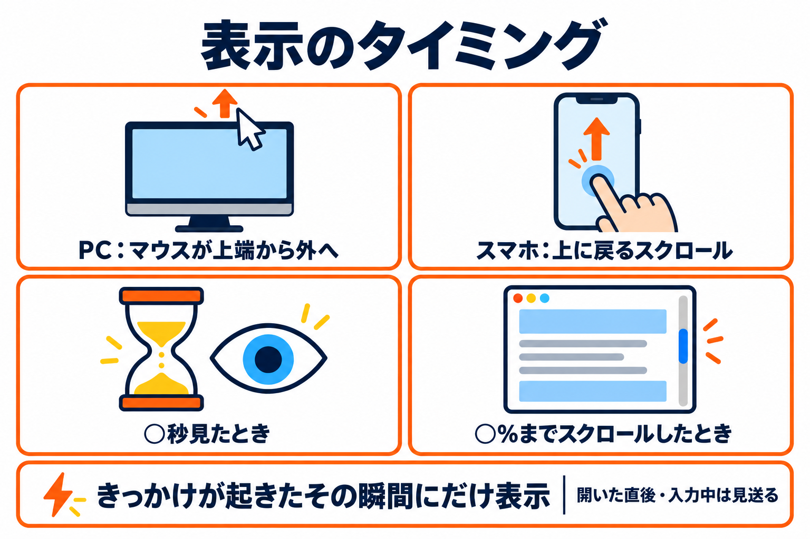
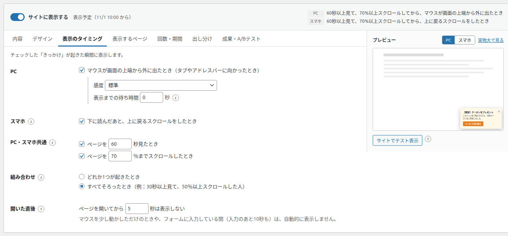

表示のタイミングタブ
バナーを「いつ」表示するかを決めるタブです。チェックした「きっかけ」が起きたその瞬間に表示します。


表示の決まり（大切な考え方）
タブのいちばん上には「チェックした「きっかけ」が起きた瞬間に表示します。」と表示されています。
- バナーは、チェックしたきっかけが起きたその瞬間に表示します。
- その瞬間が「開いた直後」や「入力中」などに当たったときは、そのきっかけは見送ります。あとからまとめて表示することはありません（次のきっかけを待ちます）。
- 1つのページで表示するバナーは1つだけです。一度表示したら、そのページではほかのバナーは表示しません。
- いつ表示されるかは、画面上部と一覧に文章で表示されます（例:「マウスが画面の上端から外に出たとき、または 30秒見たとき」）。
項目の一覧
| 項目 | 種類 | 初期値 | 入力できる範囲 |
|---|---|---|---|
| PC：マウスが画面の上端から外に出たとき | チェックボックス | オン | - |
| 感度 | プルダウン | 標準 | 高い / 標準 / 低い |
| 表示までの待ち時間 | 数字（秒） | 0 秒 | 0〜5 秒（0.1 秒きざみ） |
| スマホ：下に読んだあと、上に戻るスクロールをしたとき | チェックボックス | オン | - |
| ページを ○ 秒見たとき | チェックボックス ＋ 数字 | オフ（数字は 30） | 1〜3600 秒 |
| ページを ○ ％までスクロールしたとき | チェックボックス ＋ 数字 | オフ（数字は 50） | 1〜100 % |
| 組み合わせ | ラジオボタン | どれか1つが起きたとき | どれか1つ / すべてそろったとき |
| 開いた直後：ページを開いてから ○ 秒は表示しない | 数字（秒） | 5 秒 | 0〜3600 秒 |
PC：マウスが画面の上端から外に出たとき
何をするものか: パソコンで、マウスが画面の上端から外に出た瞬間（タブやアドレスバー、閉じるボタンへ向かったとき）に表示します。帰ろうとしている人に、最後の案内を見せる使い方です。
チェックを入れると、次の2つの項目が表示されます。
| 項目 | 選択肢・内容 |
|---|---|
| 感度 | 高い: 上端の近くで外に出ても反応します。 標準: 初期値です。 低い: 上端ちょうどから外に出たときだけ反応します。 （読み込んだバナーなどで、この3つ以外の値が設定されているときは「カスタム（上端から ○px 以内）」と表示されます） |
| 表示までの待ち時間 | マウスが外に出てから、表示するまで待つ秒数です。待っている間にマウスが画面に戻ったら表示しません。うっかり上へ動かしただけの人に出にくくなります。 |
次のときは、きっかけとして数えません。
- マウスを少し動かしただけのとき（ページを開いてから、ある程度マウスを動かすまでは数えません）
- 画面の左右から外に出たとき
- ページの中の動画や地図などの埋め込みに入ったとき
- ページの中のプルダウンを開いたとき
スマホ：下に読んだあと、上に戻るスクロールをしたとき
何をするものか: スマホでは、マウスが画面の外に出ることがありません。代わりに、ある程度下まで読んだ人が、ページの上へ戻るスクロールをした瞬間に表示します。読み終えて戻ろうとしている人への案内です。
- あまり下まで読んでいない人の上スクロールや、少しだけ戻したときは数えません。
- ページを開いた直後に、ブラウザが前に見ていた位置へスクロールを戻す動きは数えません。
PC とスマホの見分け方: 画面の幅が狭いとき（目安として 782px 以下）や、スマホのブラウザで見ているときは「スマホ」として扱います。それ以外は「PC」です。
PC・スマホ共通
どちらの端末でも使えるきっかけです。チェックボックスにチェックを入れて、数字を決めます。数字の欄を触ると、チェックは自動でオンになります。
| 項目 | 内容 |
|---|---|
| ページを ○ 秒見たとき | ページを指定した秒数見た瞬間に表示します。数えるのはページが画面に出ていた時間だけで、別のタブを見ている間は数えません。 |
| ページを ○ ％までスクロールしたとき | ページの指定した位置（ページ全体を 100 % としたときの割合）まで、初めてスクロールした瞬間に表示します。一度その位置まで読めば、上に戻っても条件は満たしたままです。 |
スクロールできない短いページでは、「○％までスクロールしたとき」は起きません。
組み合わせ
きっかけを2つ以上チェックしたときだけ表示されます。
| 選択肢 | 表示するとき |
|---|---|
| どれか1つが起きたとき（初期値） | チェックしたきっかけのどれか1つが起きた瞬間に表示します。 |
| すべてそろったとき（例：30秒以上見て、50％以上スクロールした人） | 「○秒見た」「○％スクロールした」の条件をすべて満たしたときに表示します。マウスが上端から外に出たとき（PC）・上に戻るスクロール（スマホ）もチェックしている場合は、条件を満たしたあとで離れそうになった瞬間に表示します。 |

開いた直後
何をするものか: ページを開いてから指定した秒数の間は、きっかけが起きても表示しません。読み始めたばかりの人に表示するのを防ぎます。
- この間に起きたきっかけは数えません。あとからまとめて表示することもありません。
- 「ページを ○ 秒見たとき」の秒数がこれより短いときは、長いほう（開いた直後の秒数）に合わせます。画面の要約の文も、その秒数で表示されます。
- このほか、欄の下に「マウスを少し動かしただけのときや、フォームに入力している間（入力のあと10秒も）は、自動的に表示しません。」と書かれているとおり、フォームに入力している間と、入力のあと 10 秒間は表示しません。
- 「○ 秒見たとき」が入力中などで見送られたときだけは、次にスクロールした瞬間にもう一度確かめて、表示できるなら表示します。
きっかけを何もチェックしないと
どのきっかけにもチェックを入れない場合は、「開いた直後」の秒数（最低 1 秒）がたったときに表示します。画面の要約には「○秒たったとき」と表示されます。
ほかのバナーと重なったとき
複数のバナーの表示のきっかけがほぼ同時に起きたときは、「回数・期間」タブの優先度が大きいバナーを1つだけ表示します。
おすすめ: 初期の状態（PC はマウスが上端から外へ、スマホは上に戻るスクロール、開いてから 5 秒は表示しない）が、読むのをじゃましにくい設定です。表示が多すぎると感じたら、感度を「低い」にするか、待ち時間を 0.3〜0.5 秒ほどにします。